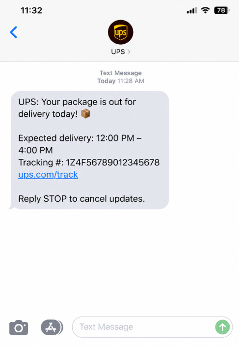
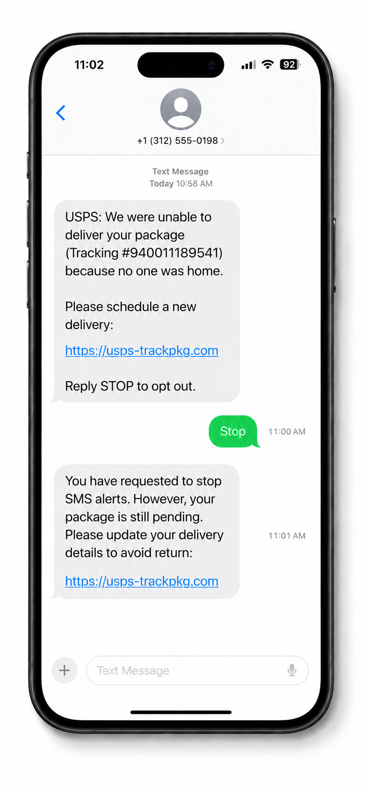

Legitimate Example

A real delivery notification provides accurate tracking information and directs you to the delivery company's official website or app. You can independently check your package status using a verified tracking number.
Delivery and package scams use fake shipping notifications to steal your money or personal information. Scammers may pretend to represent delivery companies and claim there is a problem with your package.
Scammers may:
Knowing the warning signs can help you protect yourself.

A real delivery notification provides accurate tracking information and directs you to the delivery company's official website or app. You can independently check your package status using a verified tracking number.

A scammer may text you claiming your package is delayed, your address is incorrect, or a small redelivery fee is required. The message may include a suspicious link that leads to a fake website designed to steal your information.
Remember: Never trust an unexpected delivery message just because it mentions a package, even if you are expecting one.
Scammers impersonate delivery companies to make you believe there is a problem with a shipment. They then try to trick you into clicking a malicious link, paying a fake fee, or sharing personal information.
You receive an unexpected text or email claiming a package could not be delivered, is being held, or needs additional information.
The message directs you to a fake tracking website and asks you to enter personal information, provide payment details, or pay a small redelivery fee.
After you submit your details or payment, scammers may steal your money, misuse your identity, or use your information for further fraud.
Fake delivery notifications can appear in many places, including:
Anyone who receives packages can encounter a delivery scam. Scammers may target people who:
However, it's important to know that anyone can fall victim.
If a delivery notification seems suspicious, take these steps:
Being scammed can happen to anyone. Acting quickly may help limit the damage, and reporting the incident can help protect others.
Check the tracking information through the delivery company's official website or app. Be cautious of unexpected messages that demand payment, request sensitive information, or pressure you to click a link. Do not use the link in the message to verify its legitimacy.
Scammers often send messages that appear relevant to people who shop online. Even if you are expecting a delivery, do not assume an unexpected text is legitimate. Open the retailer's order page or the carrier's official website and check the tracking status independently.
Some legitimate deliveries may involve fees under specific circumstances, but an unexpected text demanding payment is not proof that a fee is real. Check the shipment details and contact the carrier through its official website or app before paying. Never enter payment information through a suspicious link.